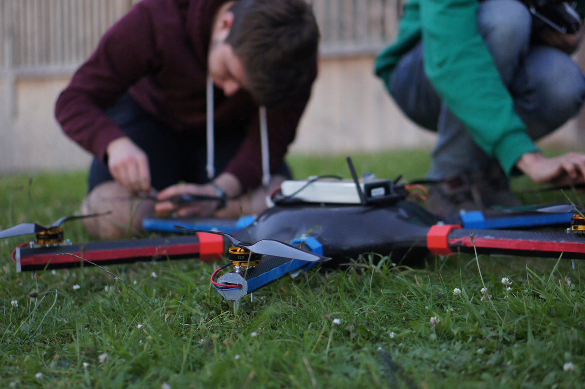
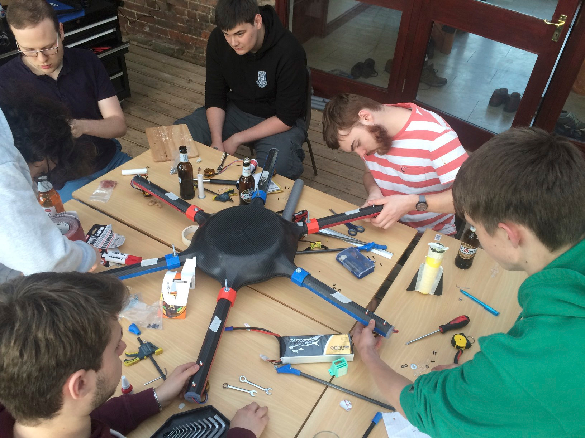
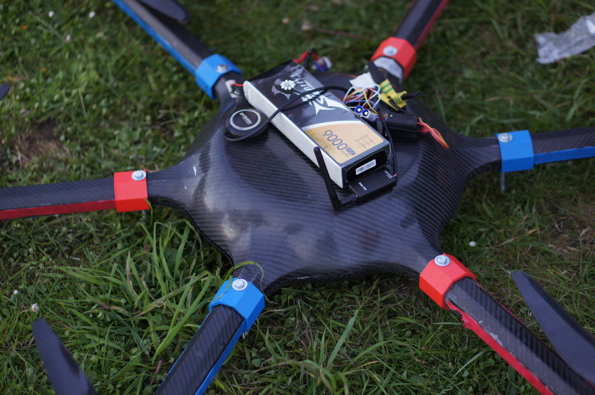
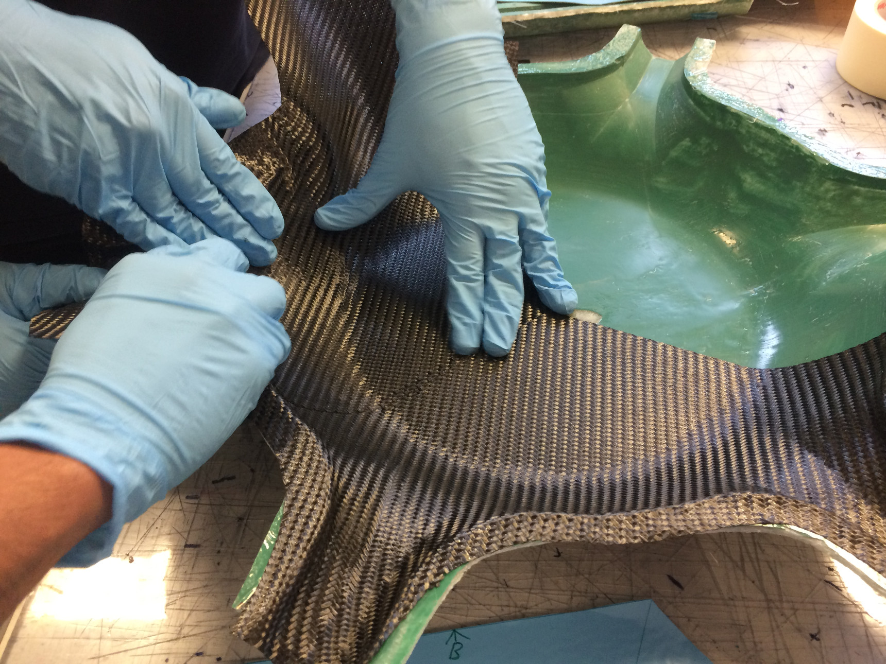
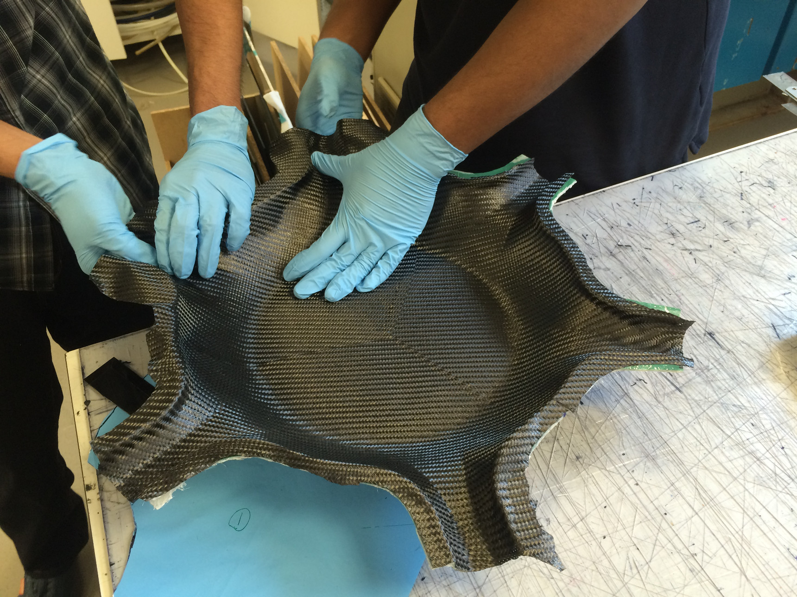
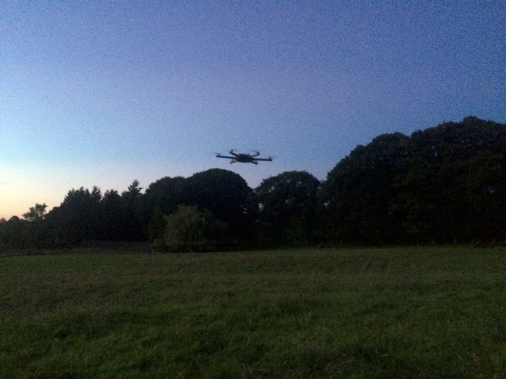

Project Hex is a student-led project at The University of Sheffield which aims to design, build and fly autonomous aerial vehicles to compete in the IMechE Unmanned Aerial Systems (UAS) Challenge.
During my third year at University I joined Project Hex where I worked with the electronics and structures teams.

Each team must build an autonomous vehicle which will undertake a virtual humanitarian aid mission on the day of the competition. The aircraft must autonomously navigate between pre-defined GPS coordinates, and precisely deliver aid packages to visually marked positions.

As a member of the electronics team, I assisted in researching, sizing and purchasing appropriate components including motors, motor speed controllers (ESCs), batteries, and a flight controller. Appropriate specification of the electronic systems and propellers was of critical importance to achieve the required thrust while being constrained by cost, battery life and weight.

The Commercial Off-The-Shelf (COTS) budget for the aircraft was £1000 as stated in the competition rules. In order to reduce COTS spending we decided to manufacture our own lightweight body using carbon fibre reinforced polymer. I worked with the structures team to create the required tooling and assist in the carbon fibre layup.

We began by 3D printing the desired body geometry in six separate parts which were then joined together to form a whole, and surface-treated with body filler and wet sanding to provide a smooth finish. Secondly we created a female mould by laying up chopped strand glass fibre and a room temperature cure resin over the geometry.

After curing, the glass fibre tool was sanded, waxed and polished to achieve a glossy finish. Body panels were then formed by laying up prepreg carbon fibre reinforced polymer (CFRP) over the glass mould. Each body panel was made up from three plies of CFRP, each ply with a different fibre angle and each being made up of several sections.
Testing of the hexacopter's manual flight performance and payload release mechanism.

Although the aircraft was working well during testing, we unfortunately ran into technical issues on the day of the competition and were unable to fly. Despite a disappointing end, the project was an extremely enjoyable and valuable experience for everyone involved.
Back to home